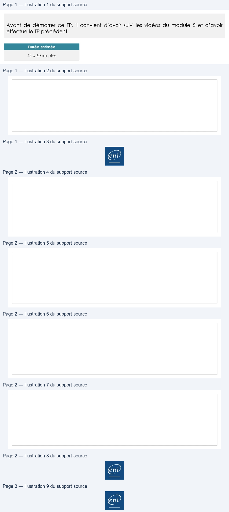

Transcription du document du Drive TSSR. La mise en forme est adaptée au Web ; les compléments IA du portail sont présentés séparément.
TP du Module 05 – Utiliser des fichiers sous Linux
Avant de démarrer ce TP, il convient d’avoir suivi les vidéos du module 5 et d’avoir
effectué le TP précédent.
Durée estimée
45 à 60 minutes
Dans le module que vous venez de parcourir, vous trouverez les commandes nécessaires
pour répondre aux questions.
1. Créez un nouveau fichier appelé MonDeuxiemeFichier à l'aide de la commande
cat, dont le contenu sera :
Conseil :
pour bien utiliser la ligne de commande
faire des étirements de doigts avant chaque repas.
2. Créez un fichier MonTroisiemeFichier avec cat, contenant le texte :
Ne pas oublier de lire au moins 4 pages de man
avant d'aller se coucher
Page 1/3
© ENI – Tous droits réservés
Utilisation d'une distribution GNU/Linux
3. Créez un nouveau fichier fichier2+3 par concaténation des deux fichiers qui
viennent d'être créés.
4. Combien de comptes d'utilisateurs ont été créés sur la machine, sachant que le
fichier contenant les utilisateurs est /etc/passwd et qu'une ligne correspond à un
utilisateur ?
5. Affichez uniquement les 2 premières lignes du fichier /etc/hosts
Page 2/3
© ENI – Tous droits réservés
Une solution est proposée pour ce TP sous la forme d'un PDF commenté, disponible dans
les ressources à télécharger.
Page 3/3
© ENI – Tous droits réservés
